長野・諏訪市
かたくらシルクホテル様
全9室すべてに導入。部屋ごとのインテリアに合わせて、WAONの色とアンプの種類を選びました。
使っている製品WAONUA-1DA-1

信州の小さな工房でつくった、CDジャケットほどのスピーカー。
ホテルの客室、酒蔵、カフェ、ラジオ局で、
お店やホテルで使う方と、ご自宅や机の上で楽しむ方。
入口を2つに分けて、合う組み合わせをご案内します。
「大きく複雑なものが良い音がする…本当でしょうか？」
導入した場所の言葉といっしょに、4つの理由をご紹介します。
音が空間にしみ込むように広がるので、小さな音量でも部屋のどこでもはっきり聴こえます。
声や楽器を素直に伝え、耳に刺さらない音。接客や食事の会話の中でも、BGMがそっと寄り添います。
営業中ずっと流していても、聴き疲れしにくい自然な響き。働く人にもやさしい音です。
CDジャケットほどの木の箱。木製で軽く、レールや梁に付けても建物に負担をかけません。
業務で使っていただいている16件のうち、主な11か所です。地図の点とカードはつながっています。
全9室すべてに導入。部屋ごとのインテリアに合わせて、WAONの色とアンプの種類を選びました。
東京の小さな隠れ宿。アートな空間で、超小型アンプとWAONを使っていただいています。
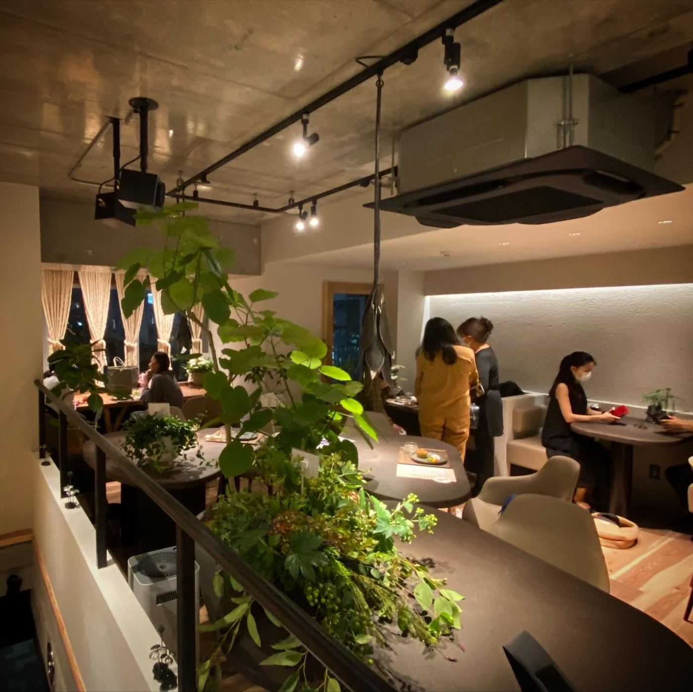
東京タロット美術館のミュージアムカフェ。美術館に続いてカフェでも使っていただいています。

築200年の本棟造りの古民家。客席の上と受付に1組ずつ、開店の準備段階からご相談いただきました。
本場で腕を磨いたシェフのイタリアンバール。取り付けた大工さんも気に入り、もう1組ご注文いただきました。
工房と同じ富士見町の洋菓子店。お店と2022年にできた新しい工房に設置しました。
100年前に諏訪で始まった老舗のパン屋さん。お店の改装に合わせて導入いただきました。

1階の売り場とスターバックスの店内音響に。改装では、5年使ったWAONを点検して黒に塗り替えました。

大きな梁と漆喰の壁の蔵元ショップ。店内の塗料と同じ色でWAONを仕上げ、4本を設置しています。
美術館の館内の音響に、WAONと小型の真空管アンプを選んでいただきました。
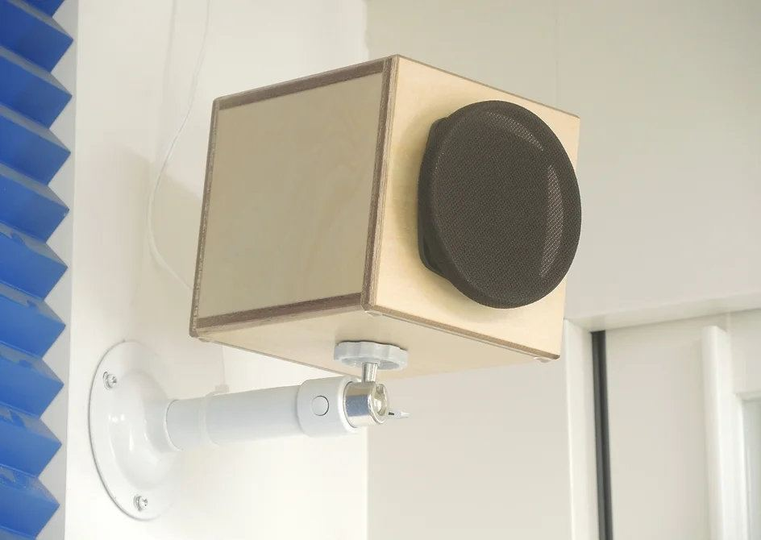
ラジオ局の本社。エントランスのロビーとオフィスで、放送を聴くためのモニターとして使われています。
このほか、代官山のアパレル店、名古屋のセレクトショップ、立体音響の制作会社、蔵元でのコンサートなどでも使っていただいています。
受賞、雑誌での紹介、ご愛用の方、試聴できるお店。ひとつにまとめました。
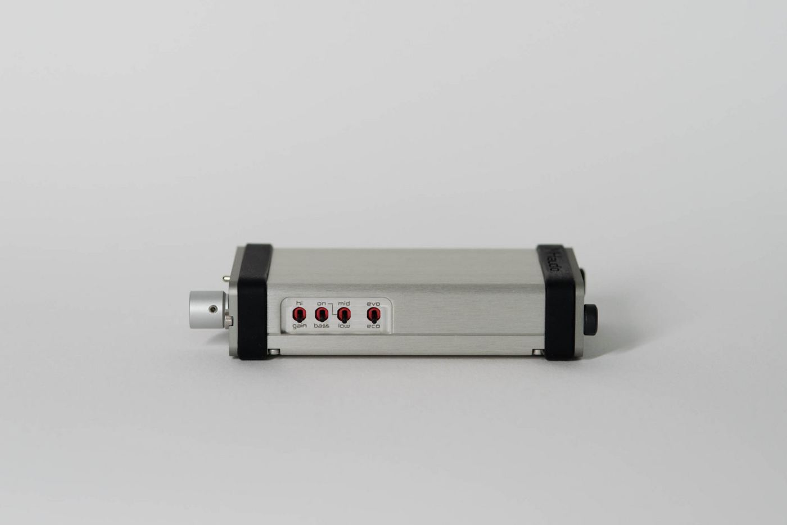
ヘッドホンアンプ HA-11 が受賞しました。信州の小さな工房で、一台ずつ手で仕上げたアンプです。
蓼科の小林音楽研究所で使っていただいています（使用先一覧より）。
どの製品にも「この場所で使われています」を添えました。お店で使われている音を、そのままご自宅へ。
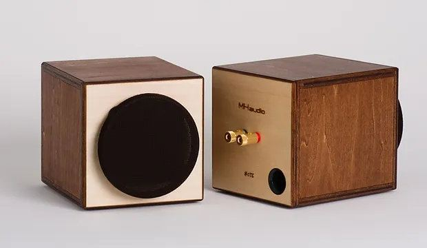
CDジャケットほどの木の箱。茶色の部分は柿渋を10回以上重ねて仕上げています。
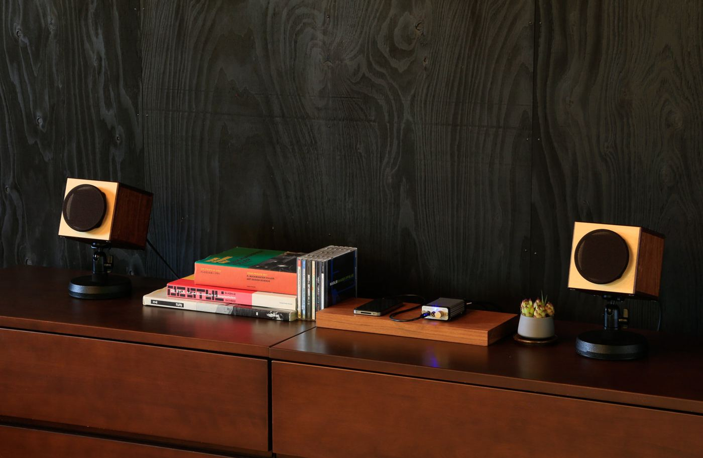
竹（take）とウォールナット（wn）の箱。お部屋の家具の色に合わせて選べます。

手のひらに乗る陶器のボディ。デスクやカウンター、旅先でも使えます。
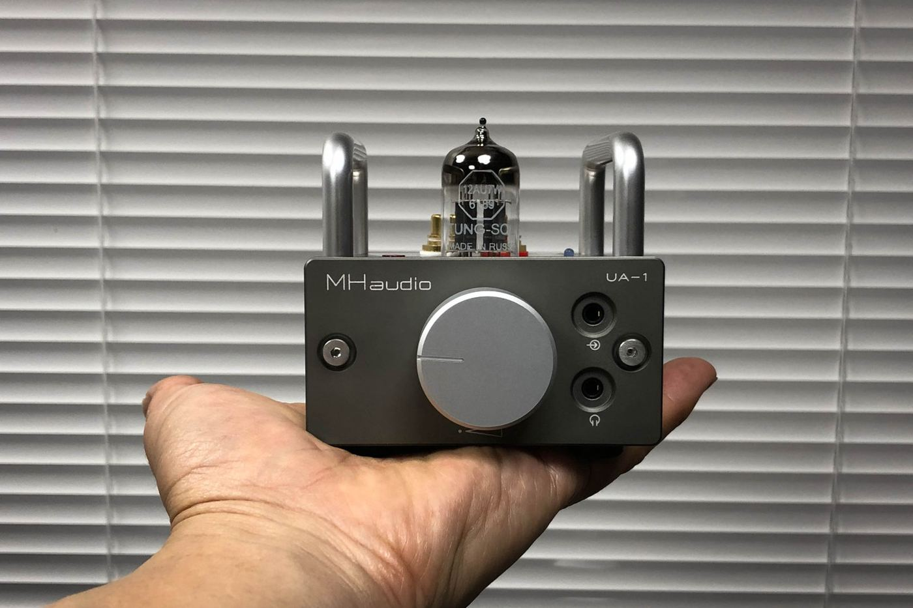
大きく重い真空管アンプの良さを、手のひらのサイズに。毎日つかえる真空管の音です。
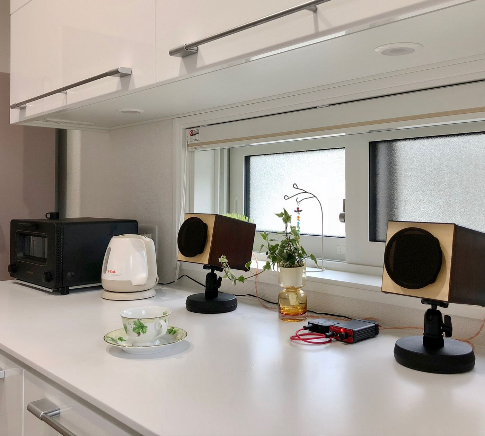
スマホより小さい置き場所で、出力10W＋10W。黒と銀の2色です。
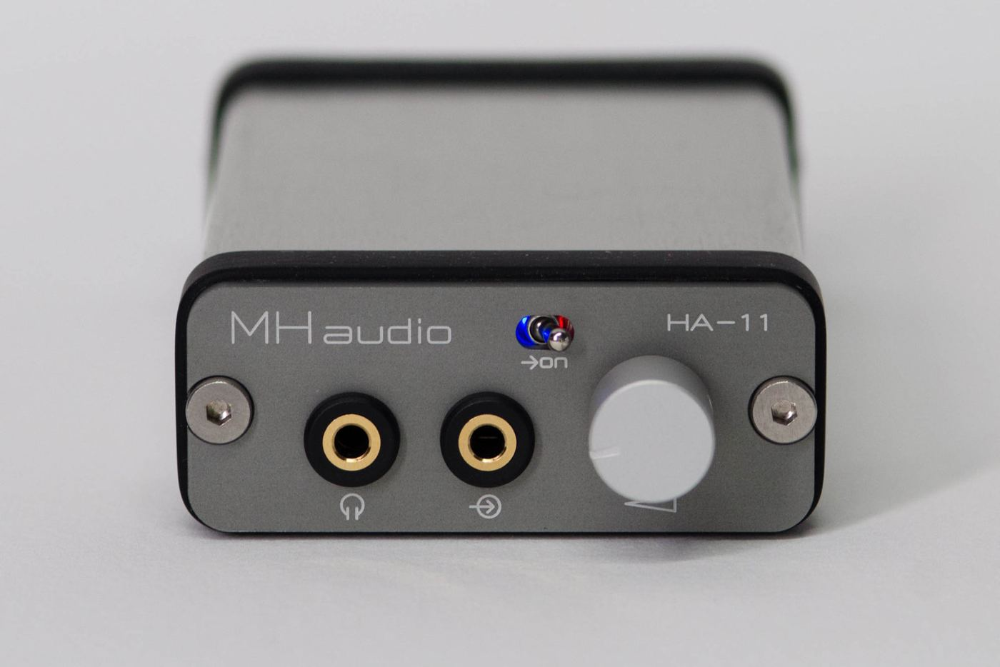
HA-11はオーディオ銘機賞2014受賞。HA-1は電池で動く持ち歩けるヘッドホンアンプです。
お店、ご自宅、ホテル。置く場所から考える、オーディオの読みものです。
掲載内容イメージ
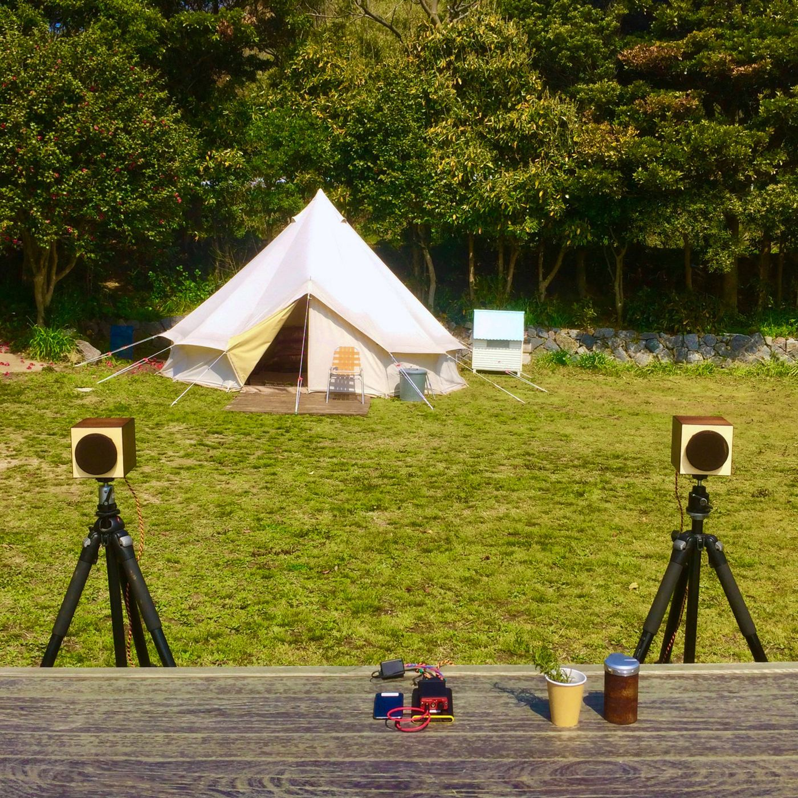
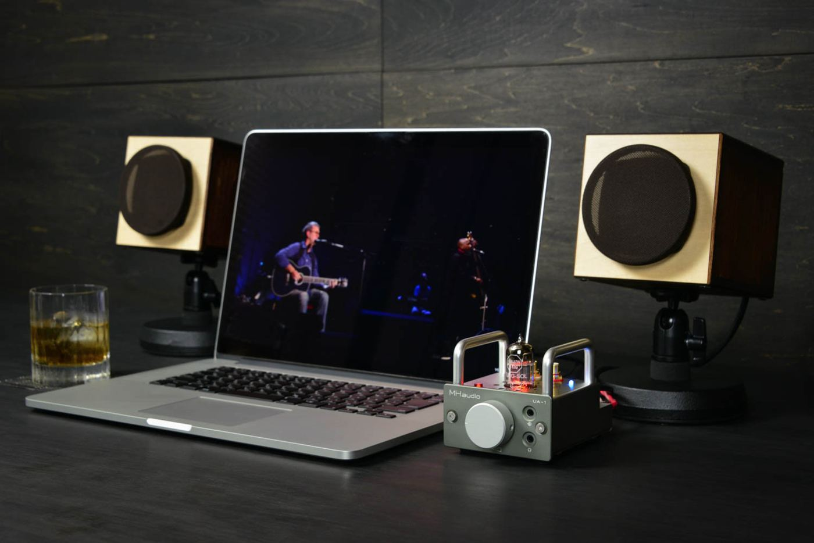
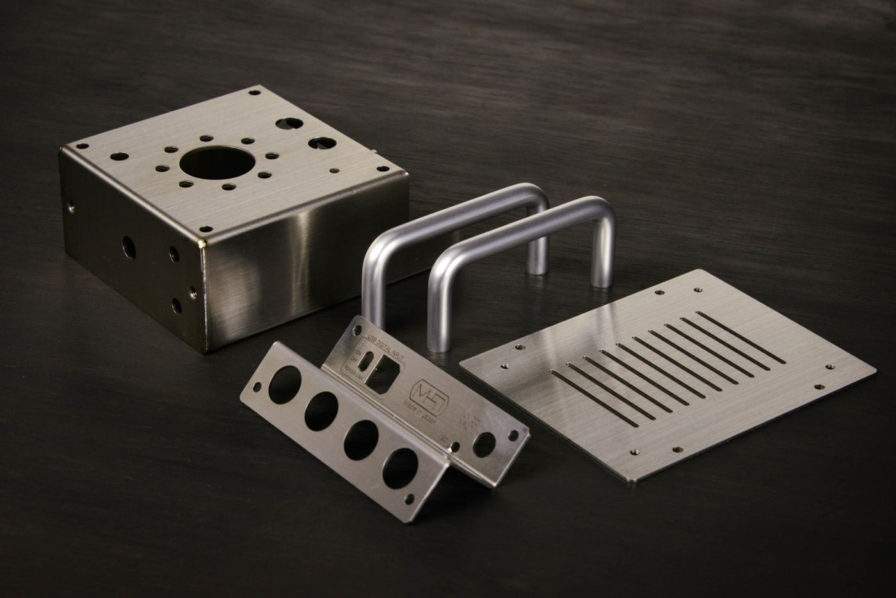
MH audioは、長野県富士見町の小さな工房です。代表の星野が、設計から仕上げ、お届けまでをほぼ一人で手がけています。
精密加工や家具の専門家の力を借りながら、一台ずつ手で仕上げるので、造りは少しずつ違います。長く使っていただける質感を大切にしています。
お店で実物にふれるか、ふるさと納税の返礼品として。
内容は各自治体のページでご確認ください。
置きたい場所の広さや雰囲気をお聞きして、合う組み合わせをメールでご提案します。お店・ホテルの方も、ご自宅の方も同じ窓口です。
返信はメールでお送りします